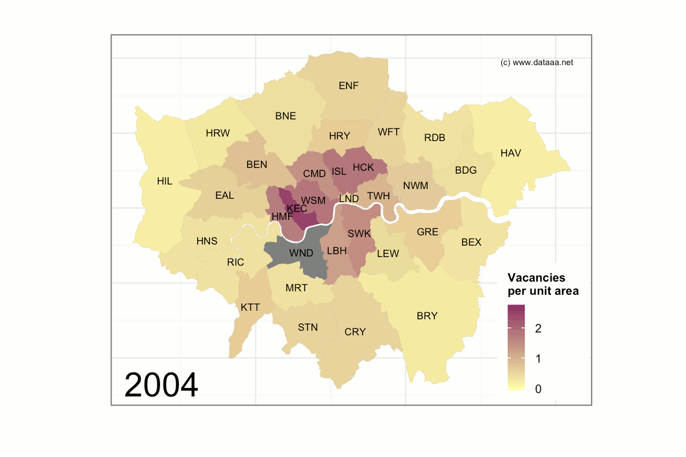

Empty homes in London
Living in London is, for many and especially Dick Whittington, a dream. But it's a dream that comes with a hefty price tag: average monthly rental prices are nearly £1,500, compared to a national average of £750 or so. Despite this, the population of London continues to grow by approx. 1.3% per year, and is now at around 8.6M people (Greater London), levels which haven't been seen since the middle of the last century (Second World War). Given that the number of houses built in all of England last year was about 120,000, the pressure on fitting more people into existing structures in London is increasing.
Homelessness is also increasing, up 7% in London from 2013 to 2014. This brings the estimated total to about 750 people, almost a quarter of the homeless people in England.
Given these pressures, councils in London are turning their attention to vacant buildings, and developing strategies for populating them where possible. It seems to be working. I pulled some data on vacant buildings from the London Datastore, and put together this animated visualisation in an attractive "rhubarb and custard" colour scheme:

(Mapping data contains National Statistics data © Crown copyright and database right [2015] and Ordnance Survey data © Crown copyright and database right [2015]. Map shows number of vacant buildings per hectare.)
With the exception of Kensington & Chelsea, which is the most expensive place to live in London (renters here can expect to pay in excess of £3,100 per month) most boroughs are reducing their vacant premises significantly, especially since 2008, when mayor Boris Johnston came into office.
The animation also shows the regeneration of some places like Hackney over the last 10 years or so. Hackney was once something of an industrial wasteland, but is now becoming one of the more trendy London boroughs to live in.